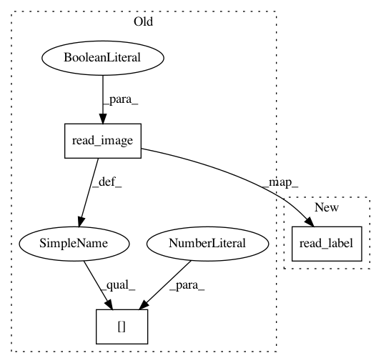

9decee5ab0aaa0614ea4e9557a6cd24333dbe7fe,chainercv/datasets/camvid/camvid_dataset.py,CamVidDataset,_get_label,#CamVidDataset#,114
Before Change
def _get_label(self, i):
_, label_path = self.paths[i]
label = read_image(label_path, dtype=np.int32, color=False)[0]
// Label id 11 is for unlabeled pixels.
label[label == 11] = -1
return label
After Change
def _get_label(self, i):
_, label_path = self.paths[i]
label = read_label(label_path, dtype=np.int32)
// Label id 11 is for unlabeled pixels.
label[label == 11] = -1
return label
In pattern: SUPERPATTERN
Frequency: 3
Non-data size: 3
Instances
Project Name: chainer/chainercv
Commit Name: 9decee5ab0aaa0614ea4e9557a6cd24333dbe7fe
Time: 2019-02-03
Author: 69guitar1015@gmail.com
File Name: chainercv/datasets/camvid/camvid_dataset.py
Class Name: CamVidDataset
Method Name: _get_label
Project Name: chainer/chainercv
Commit Name: 9decee5ab0aaa0614ea4e9557a6cd24333dbe7fe
Time: 2019-02-03
Author: 69guitar1015@gmail.com
File Name: chainercv/datasets/ade20k/ade20k_semantic_segmentation_dataset.py
Class Name: ADE20KSemanticSegmentationDataset
Method Name: _get_label
Project Name: chainer/chainercv
Commit Name: 9decee5ab0aaa0614ea4e9557a6cd24333dbe7fe
Time: 2019-02-03
Author: 69guitar1015@gmail.com
File Name: chainercv/datasets/cityscapes/cityscapes_semantic_segmentation_dataset.py
Class Name: CityscapesSemanticSegmentationDataset
Method Name: _get_label